Module 03: Continuous-Time Methods
EDHEC Business School
Purdue University
January 2026
Continuous-time formulations provide an elegant counterpart to discrete-time dynamic programming.
In this module, we revisit the consumption-savings problem from Module 02.
The module is organized as follows:
We extend the consumption-savings problem from Module 02 in two dimensions:
Asset returns:
Riskless return over a small interval \(\Delta t\) is \[ R_f = 1 + r\,\Delta t, \] and the return on the risky asset is: \[ R_{r,t+\Delta t} = 1 + \mu_r\,\Delta t + \sigma_r \sqrt{\Delta t}\,\varepsilon_{r,t+\Delta t}, \] where \(\varepsilon_{r,t+\Delta t}\) is a unit-variance white noise.
Labor income:
Labor income follows a (discrete-state) Markov chain: \[ Y_t \in \{Y_1, \ldots, Y_{N_y}\}, \] with transition probabilities \[ P_{ij} = \lambda_{ij}\,\Delta t, \qquad j \neq i, \] and \(P_{ii} = 1 - \sum_{j \neq i} P_{ij}\).
Note
The scaling ensures that mean and variance of the risky return are of order \(\Delta t\). To see this, fix a horizon \(T = n\,\Delta t\) and note that \[ \operatorname{Var}\!\left[\sum_{k=1}^{n} R_{r,t+k\Delta t}\right] = n\,\sigma_r^2\,\Delta t = \sigma_r^2\,T. \] Hence, as we partition the time interval into finer and finer subperiods, the total amount of risk over \([t,\,t+T]\) remains unchanged.
The Bellman equation for this discrete-time formulation is \[ V_t(W, Y) = \max_{c, \alpha} \left\{ u(c)\,\Delta t + e^{-\rho \Delta t}\, \mathbb{E}\left[V_{t-\Delta t}(W', Y')\right] \right\}, \] subject to the law of motion for wealth, \[ W' = R_{p,t+\Delta t}\,\bigl(W + (Y - c)\,\Delta t\bigr), \qquad R_{p,t+\Delta t} = (1-\alpha)\,R_f + \alpha\,R_{r,t+\Delta t}, \] and a borrowing limit \(W \geq \underline{W}\), given a transition matrix \(\Pr(Y' = Y_j \mid Y = Y_i) = P_{ij}\).
Note
When deriving the continuous-time limit, it is essential to distinguish between flow and stock variables. The cash-on-hand variable, \[ M = W + Y\,\Delta t, \] combines a stock (wealth) with a flow (labor income). As \(\Delta t \to 0\), this distinction vanishes, and \(M\) and \(W\) coincide in the limit.
Wealth dynamics.
Taking the limit as \(\Delta t \to 0\), we obtain the continuous-time wealth dynamics: \[ dW_t = [(1-\alpha_t) r W_t + \alpha_t \mu_r W_t + Y_t - c_t] dt + \alpha_t \sigma_r W_t\, dB_t, \] where \(B_t\) is a standard Brownian motion.
Labor income dynamics.
We now derive the continuous-time version of the Bellman equation: \[ 0 = \max_{c, \alpha} \Big\{ u(c) + \frac{\mathbb{E}\!\left[V_{t-\Delta t}(W',Y') - V_t(W,Y)\,\middle|\,W,Y\right]}{\Delta t} - \rho\,V_t(W,Y) \Big\} + O(\Delta t). \] subject to the wealth dynamics and labor income dynamics.
Taking the limit as \(\Delta t \to 0\), we obtain the continuous-time Bellman equation: \[ \rho V_t(W,Y)\,dt = \max_{c, \alpha} \Big\{ u(c)\,dt + \color{#d55e00}{\underbrace{\mathbb{E}\!\left[dV_t(W,Y)\right]}_{\text{drift term}}} \Big\}. \]
Applying Itô’s lemma to \(V_t(W,Y)\), we obtain the Hamilton-Jacobi-Bellman (HJB) equation:
\[ \rho V_t(W,Y_i) = \max_{c,\alpha} \Big\{ u(c) - \frac{\partial V_t}{\partial t} + \mathcal{D}V_t(W,Y_i) + \sum_{j \neq i} \lambda_{ij}\big[V_t(W,Y_j) - V_t(W,Y_i)\big] \Big\}, \] where \(\mathcal{D}\) is the Dynkin operator: \[ \mathcal{D}V_t(W,Y) = V_W\,[r W + \alpha (\mu_r - r) W + Y - c_t] + \tfrac{1}{2} V_{WW}\,(\alpha \sigma_r W)^2. \]
We now show how to solve the HJB equation numerically using finite differences.
Asset dynamics:
No arbitrage:
We are interested in pricing the option using the principle of no-arbitrage.
The absence of arbitrage opportunities implies the existence of a stochastic discount factor \(\pi_t\): \[ d\pi_t = -r\,\pi_t\,dt - \eta\,\pi_t\,dB_t, \] where \(\eta \equiv \frac{\mu_S - r}{\sigma_S}\) is the market price of risk.
The value of a call option is given by \[ V_T(S) = \mathbb{E}_0\!\left[ \frac{\pi_T}{\pi_0}\,\max(S_T - K, 0) \,\middle|\, S_0 = S \right]. \] with terminal payoff \(V_T(S) = \max(S - K, 0)\).
The HJB equation for this problem at time \(t \geq 0\) is \[ 0 = \mathbb{E}_t\!\left[\, d \bigl(\pi_t\,V_{T-t}(S_t)\bigr) \right]. \]
Applying Itô’s lemma to \(\pi_t V_{T-t}(S_t)\), we obtain the Black–Scholes–Merton PDE: \[ -r\,V_T(S) - \frac{\partial V_T(S)}{\partial T} + r\,S\,\frac{\partial V_T(S)}{\partial S} + \tfrac{1}{2}\sigma_S^2 S^2\,\frac{\partial^2 V_T(S)}{\partial S^2} = 0, \] with terminal condition \(V_0(S) = \max(S - K, 0)\).
Tip
It is convenient to express the PDE in terms of the log stock price \(s \equiv \log S\): \[ -r\,v_T(s) - \frac{\partial v_T(s)}{\partial T} + \overline{r}\,\frac{\partial v_T(s)}{\partial s} + \frac{1}{2}\sigma_S^2\,\frac{\partial^2 v_T(s)}{\partial s^2} = 0, \] with terminal condition \(v_0(s) = \max(e^s - K, 0)\), where \(\overline{r} \equiv r - \tfrac{1}{2}\sigma_S^2\) is the risk-adjusted drift.
We can solve the PDE by discretizing both time and space (\(t\) and \(s\)).
We can approximate the spatial derivatives in different ways:
Forward difference: \[ \frac{\partial v_{t_n}(s_i)}{\partial s} = \frac{v_{i+1}^n - v_i^n}{\Delta s}, \]
Backward difference: \[ \frac{\partial v_{t_n}(s_i)}{\partial s} = \frac{v_i^n - v_{i-1}^n}{\Delta s}, \]
Centered difference: \[ \frac{\partial v_{t_n}(s_i)}{\partial s} = \frac{v_{i+1}^n - v_{i-1}^n}{2\Delta s}. \]
The second spatial derivative is approximated by a centered difference: \[ \frac{\partial^2 v_{t_n}(s_i)}{\partial s^2} = \frac{v_{i+1}^n - 2v_i^n + v_{i-1}^n}{\Delta s^2}. \]
The time derivative is approximated by a forward Euler step: \[ \frac{\partial v_{t_n}(s_i)}{\partial T} = \frac{v_i^{n+1} - v_i^n}{\Delta t}. \]
We fix a forward difference in time and consider two versions for the spatial derivative:
The forward-difference version is \[ r\,v_i^n = -\frac{v_i^{n+1} - v_i^n}{\Delta t} + \overline{r}\color{#d55e00}{\,\frac{v_{i+1}^n - v_i^n}{\Delta s}} + \frac{\sigma_S^2}{2}\,\frac{v_{i+1}^n - 2v_i^n + v_{i-1}^n}{\Delta s^2}, \]
The backward-difference version is \[ r\,v_i^n = -\frac{v_i^{n+1} - v_i^n}{\Delta t} + \overline{r}\color{#009e73}{\,\frac{v_i^n - v_{i-1}^n}{\Delta s}} + \frac{\sigma_S^2}{2}\,\frac{v_{i+1}^n - 2v_i^n + v_{i-1}^n}{\Delta s^2}. \]
Rearranging either form gives a common update rule: \[ v_i^{n+1} = -r\,\Delta t\,v_i^n + p_u\,v_{i+1}^n + p_s\,v_i^n + p_d\,v_{i-1}^n, \qquad i=2, \ldots, N-1, \] where, letting \(\mathbf{1}_{\text{F}}\) and \(\mathbf{1}_{\text{B}}\) denote the forward and backward difference indicators,
\[ p_u = \frac{\overline{r}\,\Delta t}{\Delta s}\,\mathbf{1}_{\text{F}} + \frac{\sigma_S^2\,\Delta t}{2\Delta s^2}, \qquad \qquad p_s = 1 - \frac{\overline{r}\,\Delta t}{\Delta s}\,(\mathbf{1}_{\text{F}} - \mathbf{1}_{\text{B}}) - \frac{\sigma_S^2\,\Delta t}{\Delta s^2}, \qquad \qquad p_d = -\frac{\overline{r}\,\Delta t}{\Delta s}\,\mathbf{1}_{\text{B}} + \frac{\sigma_S^2\,\Delta t}{2\Delta s^2}. \]
Boundary conditions
We handle boundaries using ghost nodes, i.e., values outside the grid.
Right boundary. Option is deep in the money, so \(\frac{\partial v_{t_n}(s_N)}{\partial s} = e^{s_N}\): \[ v_{N+1}^n = v_N^n + e^{s_N}\,\Delta s. \]
Left boundary. Option is far out of the money, so \(\frac{\partial v_{t_n}(s_1)}{\partial s} = 0\): \[ v_0^n = v_1^n. \]
Define \(\mathbf{v}^n = [v_1^n, v_2^n, \ldots, v_N^n]^\top\) and the tridiagonal matrix of coefficients: \[ \mathbf{P} = \begin{pmatrix} p_s + p_d & p_u & 0 & \ldots & 0 \\ p_d & p_s & p_u & \ldots & 0 \\ \vdots & \vdots & \vdots & \ddots & \vdots \\ 0 & \ldots & p_d & p_s & p_u \\ 0 & \ldots & 0 & p_d & p_s + p_u \end{pmatrix}. \] Then the law of motion for \(\mathbf{v}^n\) is \[ \mathbf{v}^{n+1} = \mathbf{P}^r\,\mathbf{v}^n + \mathbf{b}, \qquad \mathbf{P}^r \equiv \mathbf{P} - r\,\Delta t\,\mathbf{I}_N, \] with initial condition \(\mathbf{v}^0 = [v_0(s_1), v_0(s_2), \ldots, v_0(s_N)]^\top\), and adjustment vector \(\mathbf{b} = [0, \ldots, 0,\, p_u\,e^{s_N}\,\Delta s]^\top\).
We start by defining the model structure for the Black–Scholes–Merton problem.
We then implement the finite-difference scheme.
function fd_scheme(m::BlackScholesModel; forward::Bool = true)
(; σS, r, K, T, Ns, Nt, sgrid) = m # unpack model parameters
Δs, Δt = sgrid[2] - sgrid[1], T / (Nt - 1) # spatial/time steps
r̅ = r - 0.5 * σS^2 # risk-adjusted drift
# Coefficients for the tridiagonal matrix
pu = r̅ * Δt / Δs * forward + σS^2 * Δt / (2 * Δs^2)
ps = 1 - r̅ * Δt / Δs * (2*forward-1) - σS^2 * Δt / (Δs^2)
pd = -r̅ * Δt / Δs * (1-forward) + σS^2 * Δt / (2 * Δs^2)
e = zeros(Ns)
e[1], e[end] = pd, pu # set boundary conditions
P = Tridiagonal(pd*ones(Ns-1), ps*ones(Ns)+e, pu*ones(Ns-1))
# Boundary conditions
b = zeros(Ns)
b[end] = pu * exp(sgrid[end]) * Δs
# Initial condition
v = @. max(0.0, exp(sgrid) - K) # terminal condition
for n in 2:Nt
v = (P - r * Δt * I) * v + b # update rule
end
return (; P, b, v)
endForward difference
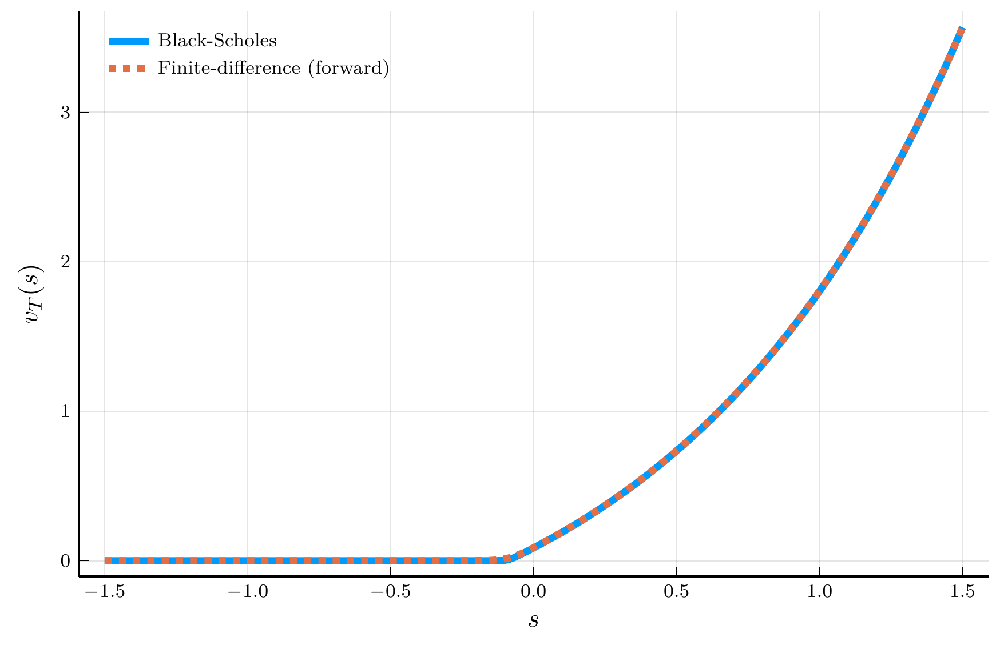
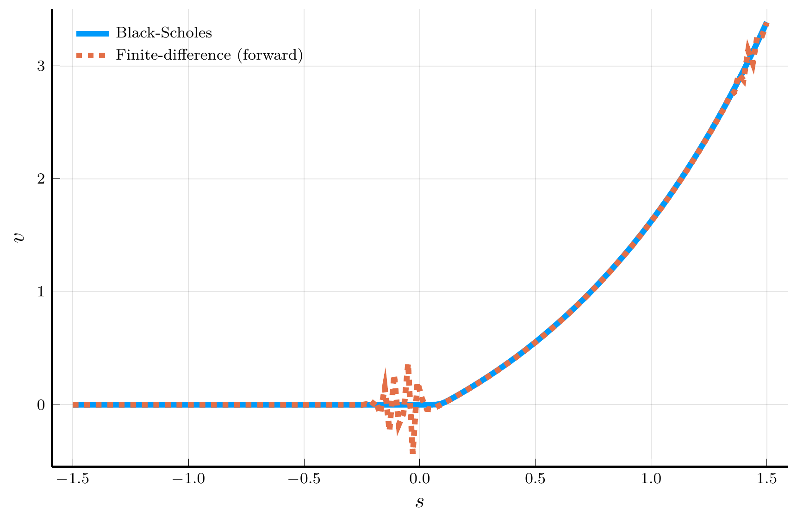
Backward difference
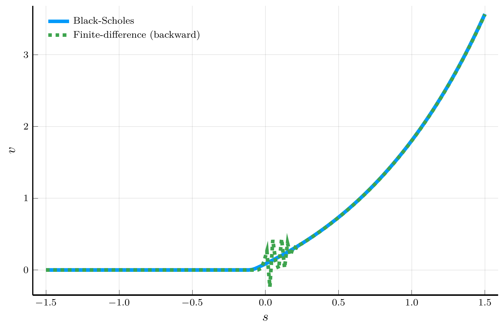
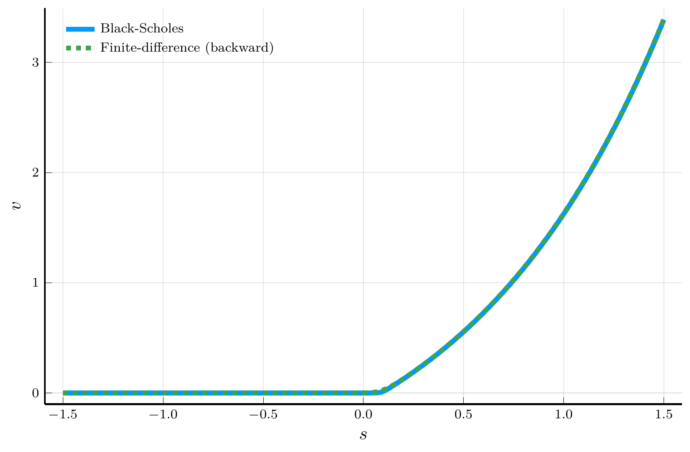
Top row: positive drift. Bottom row: negative drift.
The plots above motivate the use of an upwind scheme:
This choice suppresses numerical oscillations and improves stability of the explicit scheme.
But why does upwinding work?
The MCA approach starts from the discretized Bellman equation \[ v_T(s) = (1 - r\,\Delta t)\,\mathbb{E}\!\left[\,v_{T-\Delta t}(s') \,\middle|\, s\,\right], \] under the risk–neutral log–price dynamics with drift \(\overline r\) and variance \(\sigma_S^2\): \[ \mathbb{E}[\,s' - s \mid s\,] = \overline r\,\Delta t, \qquad \operatorname{Var}[\,s' \mid s\,] = \sigma_S^2\,\Delta t. \]
Key idea: Let’s assume \(s\) follows a Markov chain on the grid \(\{s_i\}_{i=1}^N\)
A locally consistent choice for the transition probabilities is \[ p_u = \frac{\overline r\,\Delta t}{\Delta s}\,\mathbf{1}_{\{\overline r \ge 0\}} + \frac{\sigma_S^2\,\Delta t}{2\Delta s^2},\quad p_s = 1 - \frac{|\overline r|\,\Delta t}{\Delta s} - \frac{\sigma_S^2\,\Delta t}{\Delta s^2},\quad p_d = -\,\frac{\overline r\,\Delta t}{\Delta s}\,\mathbf{1}_{\{\overline r < 0\}} + \frac{\sigma_S^2\,\Delta t}{2\Delta s^2}. \]
We need to ensure that \((p_d, p_s, p_u)\) are non-negative and sum to 1.
To ensure the nonnegativity of \(p_s\), we need to impose the Courant–Friedrichs–Lewy (CFL) condition: \[ 1 - \frac{|\overline r|\,\Delta t}{\Delta s} - \frac{\sigma_S^2\,\Delta t}{\Delta s^2} \ge 0 \quad\Longleftrightarrow\quad \Delta t \le \frac{\Delta s^2}{\,|\overline r|\,\Delta s + \sigma_S^2\,}. \]
Important
The CFL condition is crucial to ensure that the transition probabilities are non-negative.
A key aspect of the CFL condition for the explicit scheme is a restriction on \(\Delta t\)
The analysis above provided a probabilistic intuition for the stability of the finite-difference scheme.
Main result. Consider a numerical scheme of the general form \[ F^h(x, V(x), V(\cdot)) = 0, \] where \(h\) collects the discretization parameters (e.g., \(\Delta t\), \(\Delta s\)), and \(V\) is the numerical approximation to the value function.
Barles and Souganidis (1991) provide conditions for the convergence to the viscosity solution of the HJB equation.
Barles–Souganidis theorem
Suppose that the continuous-time problem admits a unique bounded viscosity solution. If a numerical scheme is:
Then the scheme converges locally uniformly to the viscosity solution of the HJB equation.
Tip
A viscosity solution is a generalized notion of solution to nonlinear PDEs like the HJB equation, which applies to problems where the value function may exhibit kinks or corners, as is typical in dynamic optimization problems with borrowing constraints or nonconvexities.
Consider our explicit upwind scheme: \[ v_i^{n+1} = p_u^r\,v_{i+1}^n + p_s^r\,v_i^n + p_d^r\,v_{i-1}^n + b_i^n, \] with coefficients \(p_u^r = p_u, p_s^r = p_s-r\,\Delta t, p_d^r = p_d\).
The scheme is therefore:
We will use the Barles–Souganidis theorem to analyze the stability of implicit schemes.
We can rewrite the equation above as \[ v_i^{n+1} = v_i^n + p_u^r\,v_{i+1}^{n+1} - \delta^r\,v_i^{n+1} + p_d^r\,v_{i-1}^{n+1}, \] where \(\delta^r \equiv p_u^r+p_d^r+r\,\Delta t\).
In matrix form, we have \[ \mathbf{A} \mathbf{v}^{n+1} = \mathbf{v}^n+ \mathbf{b}, \] where \(\mathbf{A}\) is a tridiagonal matrix of coefficients: \[ \mathbf{A} = \begin{pmatrix} 1+\delta^r - p_d^r &-p_u^r & 0 & \ldots & 0 \\ -p_d^r & 1+\delta^r & -p_u^r & \ldots & 0 \\ \vdots & \vdots & \vdots & \ddots & \vdots \\ 0 & \ldots & -p_d^r & 1+\delta^r & -p_u^r \\ 0 & \ldots & 0 & -p_d^r & 1+\delta^r -p_u^r \end{pmatrix}. \]
We need to check that the scheme is monotone, stable, and consistent.
This is equivalent to saying that \(\mathbf{A}\) is a M-matrix.🌐
Sufficient condition: off-diagonal elements are non-positive and the diagonal is strictly dominant: \(\mathbf{A}_{ii} > \sum_{j \neq i} |\mathbf{A}_{ij}|\).
Upwinding ensures that the off-diagonal elements, \(p_u^r\) and \(p_d^r\), are non-positive.
Strict diagonal dominance requires: \[ 1+\delta^r > |p_d^r| + |p_u^r| \iff 1+r \Delta t > 0, \] which holds for any \(\Delta t > 0\) provided \(r > 0\).
Important
The condition above plays the same role as the CFL condition in ensuring monotonicity, but unlike in the explicit scheme, it imposes no restriction on \(\Delta t\). This property is often referred to as unconditional stability.
We can implement the implicit scheme as follows:
function fd_implicit(m::BlackScholesModel)
(; σS, r, K, T, Ns, Nt, sgrid) = m # unpack model parameters
Δs, Δt = sgrid[2] - sgrid[1], T / (Nt - 1) # spatial/time steps
r̅ = r - 0.5 * σS^2 # risk-adjusted drift
# Coefficients for the tridiagonal matrix
forward = r̅ > 0 ? 1 : 0
pu = r̅ * Δt / Δs * forward + σS^2 * Δt / (2 * Δs^2)
ps = 1 - r̅ * Δt / Δs * (2*forward-1) - σS^2 * Δt / (Δs^2)
pd = -r̅ * Δt / Δs * (1-forward) + σS^2 * Δt / (2 * Δs^2)
e = zeros(Ns)
e[1], e[end] = pd, pu # set boundary conditions
P = Tridiagonal(pd*ones(Ns-1), ps*ones(Ns)+e, pu*ones(Ns-1))
A = (2+r * Δt) * I - P
# Boundary conditions
b = zeros(Ns)
b[end] = pu * exp(sgrid[end]) * Δs
# Initial condition
v = @. max(0.0, exp(sgrid) - K) # terminal condition
for n in 2:Nt
v = A \ (v + b) # update rule
end
return (; P, b, v)
endWe can plot the solution of the Black–Scholes–Merton PDE using the implicit scheme.
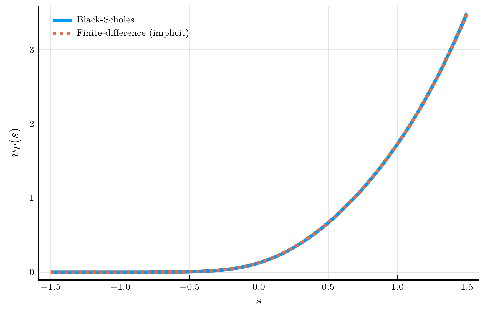
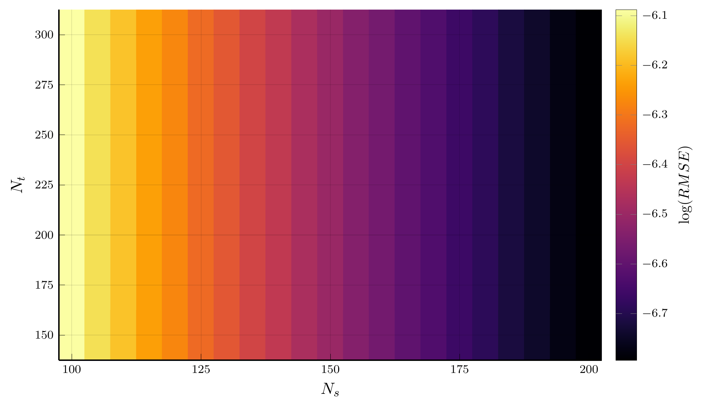
We now solve the income fluctuations problem using a finite-difference scheme.
HJB equation: \[ \rho\,V_{j,t}(W) \;=\; u \big(c_{j,t}(W)\big) \;-\; \frac{\partial V_{j,t}}{\partial t}(W) \;+\; \frac{\partial V_{j,t}}{\partial W}(W)\,\big[rW + Y_j - c_{j,t}(W)\big] \;+\; \lambda_j \big[V_{-j,t}(W)-V_{j,t}(W)\big], \] where \(c_{j,t}(W) = u'^{-1}\!\big(V_{j,t}'(W)\big)\) and \(\lambda_j\in\{\lambda_1,\lambda_2\}\) is the outgoing intensity from state \(j\).
Upwinding. Define forward and backward differences for the wealth derivative: \[ v_{i,j,F}^{\,n} \;=\; \frac{v_{i+1,j}^{\,n}-v_{i,j}^{\,n}}{\Delta W}, \qquad v_{i,j,B}^{\,n} \;=\; \frac{v_{i,j}^{\,n}-v_{i-1,j}^{\,n}}{\Delta W}. \] The corresponding wealth drifts are \[ \mu_{i,j,F}^{\,n} \;=\; r W_i + Y_j - u'^{-1}\!\big(v_{i,j,F}^{\,n}\big), \qquad \mu_{i,j,B}^{\,n} \;=\; r W_i + Y_j - u'^{-1}\!\big(v_{i,j,B}^{\,n}\big). \]
The upwinded derivative used in the drift: \[ v_{i,j,W}^{\,n} \;=\; v_{i,j,F}^{\,n}\,\mathbf{1}_{\{\mu_{i,j,F}^{\,n}>0\}} \;+\; v_{i,j,B}^{\,n}\,\mathbf{1}_{\{\mu_{i,j,B}^{\,n}<0\}} \;+\; \overline v_{i,j}\,\mathbf{1}_{\{\mu_{i,j,F}^{\,n}\le 0 \le \mu_{i,j,B}^{\,n}\}}, \] where \(\overline v_{i,j} \equiv u'(rW_i+Y_j)\).
Let \([x]^+=\max\{x,0\}\) and \([x]^-=\min\{x,0\}\). The semi-implicit scheme is \[ \rho\,v_{i,j}^{\,n+1} \;=\; u_{i,j}^{\,n} \;-\; \frac{v_{i,j}^{\,n+1}-v_{i,j}^{\,n}}{\Delta t} \;+\; \frac{v_{i+1,j}^{\,n+1}-v_{i,j}^{\,n+1}}{\Delta W}\,[\mu_{i,j,F}^{\,n}]^{+} \;+\; \frac{v_{i,j}^{\,n+1}-v_{i-1,j}^{\,n+1}}{\Delta W}\,[\mu_{i,j,B}^{\,n}]^{-} \;+\; \lambda_j\!\left(v_{i,-j}^{\,n+1}-v_{i,j}^{\,n+1}\right). \] Rearranging, yields the linear system \[ -\ell_{i,j}^{\,n}\,v_{i-1,j}^{\,n+1} \;+\; s_{i,j}^{\,n}\,v_{i,j}^{\,n+1} \;-\; r_{i,j}^{\,n}\,v_{i+1,j}^{\,n+1} \;-\; \lambda_j\,v_{i,-j}^{\,n+1} \;=\; \frac{1}{\Delta t}\,v_{i,j}^{\,n} \;+\; u_{i,j}^{\,n}, \label{eq:semi_implicit_linear} \] with nonnegative coefficients \[ \begin{align} \ell_{i,j}^{\,n} &\equiv -\frac{[\mu_{i,j,B}^{\,n}]^{-}}{\Delta W} \;\ge 0,\\ r_{i,j}^{\,n} &\equiv \;\frac{[\mu_{i,j,F}^{\,n}]^{+}}{\Delta W} \;\ge 0,\\ s_{i,j}^{\,n} &\equiv \frac{1}{\Delta t} \;+\; \ell_{i,j}^{\,n} \;+\; r_{i,j}^{\,n} \;+\; \rho+\lambda_j. \end{align} \]
Boundary conditions
To impose the no-borrowing condition at the lower boundary \(W=\underline W\), and reflection at the upper boundary \(W=\overline W\), set \[ v_{1,j,B}^{\,n} \;=\; u'(rW_1+Y_j), \qquad \qquad v_{N,j,F}^{\,n} \;=\; u'(rW_N+Y_j). \] Hence, by construction, \(\ell_{1,j}^{\,n}=r_{N,j}^{\,n}=0\), so ghost nodes are never used.
Stack the two income states as \[ \mathbf{v}_j^{\,n} = \big(v_{1,j}^{\,n},\dots,v_{N,j}^{\,n}\big)^\top,\quad \mathbf{v}^{\,n} = \big((\mathbf{v}_1^{\,n})^\top,(\mathbf{v}_2^{\,n})^\top\big)^\top,\quad \mathbf{u}^{\,n} = \big(u(c_{1,1}^{\,n}),\dots,u(c_{N,2}^{\,n})\big)^\top. \] Then \[ \mathbf{A}^{\,n}\,\mathbf{v}^{\,n+1} \;=\; \frac{1}{\Delta t}\,\mathbf{v}^{\,n} + \mathbf{u}^{\,n}, \] with the \(2N\times 2N\) block matrix \[ \mathbf{A}^{\,n} \;=\; \begin{pmatrix} \mathbf{A}_1^{\,n} & -\,\lambda_1\, \mathbf{I}_N \\ -\,\lambda_2\, \mathbf{I}_N & \mathbf{A}_2^{\,n} \end{pmatrix}, \qquad \qquad \mathbf{A}_j^{\,n} = \begin{pmatrix} s_{1,j}^{\,n} & -r_{1,j}^{\,n} & 0 & \ldots & 0 \\ -\ell_{2,j}^{\,n} & s_{2,j}^{\,n} & -r_{2,j}^{\,n} & \ldots & 0 \\ \vdots & \vdots & \vdots & \ddots & \vdots \\ 0 & \ldots & -\ell_{N-1,j}^{\,n} & s_{N-1,j}^{\,n} & -r_{N-1,j}^{\,n} \\ 0 & \ldots & 0 & -\ell_{N,j}^{\,n} & s_{N,j}^{\,n} \end{pmatrix}. \]
Unconditional stability
Off-diagonals of \(\mathbf{A}^{\,n}\) are nonpositive and \((\text{diag}) - \sum_{\text{offdiag}} |\,\cdot\,| = \big[\tfrac{1}{\Delta t} + \rho+\lambda_j + \ell + r\big] - (\ell + r + \lambda_j) = \tfrac{1}{\Delta t} + \rho \,>\, 0\), for each row. Thus \(\mathbf{A}^{\,n}\) is an M-matrix, the scheme is monotone and convergent, and it is unconditionally stable (no CFL restriction on \(\Delta t\)).
We have seen that the finite-difference method can be interpreted as an application of the MCA method: \[ \mathbf{v} = \max_{\mathbf{c}} \Big\{ u(\mathbf{c})\,\Delta t + (1-\rho \Delta t)\,\mathbf{P}(\mathbf{c})\,\mathbf{v} \Big\} \;\equiv\; \mathbf{T}\mathbf{v}, \]
One can solve this problem using any method for discrete-time dynamic programming.
Algorithm: Policy Function Iteration (PFI)
Input: Initial policy \(\mathbf{c}^{(0)}\), tolerance tol
Output: Value \(\mathbf{v}\), policy \(\mathbf{c}\)
Initialize: \(n \gets 0\)
Repeat until \(\|\mathbf{c}^{(n+1)}-\mathbf{c}^{(n)}\| < \text{tol}\):
Policy evaluation:
Solve \([I-(1-\rho\Delta t)P(\mathbf{c}^{(n)})]\mathbf{v}^{(n+1)} = \Delta t\,u(\mathbf{c}^{(n)})\).
Policy improvement:
\(\mathbf{c}^{(n+1)} \gets \arg\max_{\mathbf{c}}\{\Delta t\,u(\mathbf{c})+(1-\rho\Delta t)P(\mathbf{c})\mathbf{v}^{(n)}\}\).
\(n \gets n+1\).
Return: \(\mathbf{v}^{(n)},\,\mathbf{c}^{(n)}\)
We start by defining the model parameters and the grid.
function fd_implicit(m::IncomeFluctuationsModel; Δt::Float64 = Inf,
tol::Float64 = 1e-6, max_iter::Int64 = 100, print_residual::Bool = true)
(; ρ, r, γ, Y, λ, Wgrid, Wmin, Wmax, N) = m # unpack parameters
ΔW = Wgrid[2] - Wgrid[1]
# Initial guess
v = [1/ρ * (y + r * w)^(1-γ) / (1-γ) for w in Wgrid, y in Y]
c, vW, residual = similar(v), similar(v), 0.0 # pre-allocation
for i = 1:max_iter
# Compute derivatives
Dv = (v[2:end,:] - v[1:end-1,:]) / ΔW
vB = [(@. (r * Wmin + Y)^(-γ))'; Dv] # backward difference
vF = [Dv; (@. (r * Wmax + Y)^(-γ))'] # forward difference
v̅ = (r * Wgrid .+ Y').^(-γ) # zero-savings case
μB = r * Wgrid .+ Y' - vB.^(-1/γ) # backward drift
μF = r * Wgrid .+ Y' - vF.^(-1/γ) # forward drift
vW = ifelse.(μF .> 0.0, vF, ifelse.(μB .< 0.0, vB, v̅))
# Assemble matrix
c = vW.^(-1/γ) # consumption
u = c.^(1-γ) / (1-γ) # utility
L = -min.(μB, 0) / ΔW # subdiagonal
R = max.(μF, 0) / ΔW # superdiagonal
S = @. 1/Δt + L + R + ρ + λ' # diagonal
Aj = [Tridiagonal(-L[2:end,j], S[:,j], -R[1:end-1,j])
for j in eachindex(Y)] # tridiagonal matrices
A = [sparse(Aj[1]) -λ[1] * I
-λ[2] * I sparse(Aj[2])] # block matrix
# Update
vp = A \ (u + v/Δt)[:]
residual = sqrt(mean((vp - v[:]).^2))
v = reshape(vp, N, length(Y)) # reshape vector to matrix
if print_residual println("Iteration $i, residual = $residual") end
if residual < tol
break
end
end
s = r * Wgrid .+ Y' - c # savings
return (; v, vW, c, s, residual) # return solution
end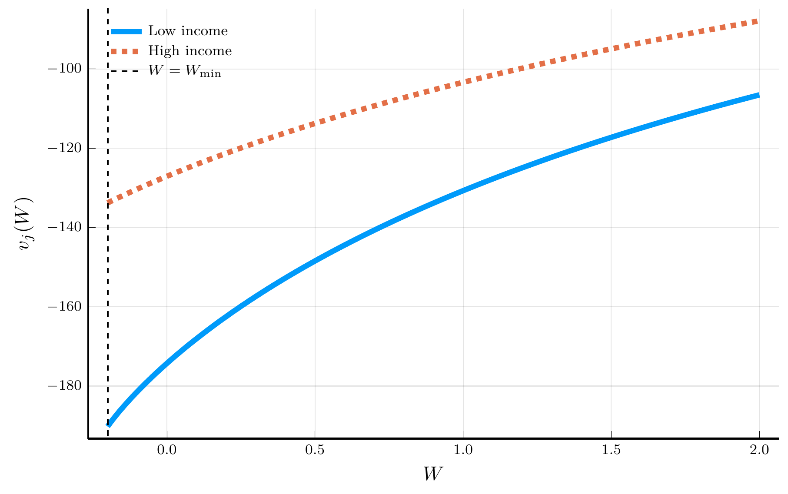
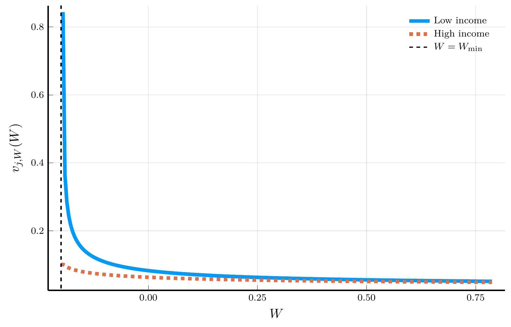
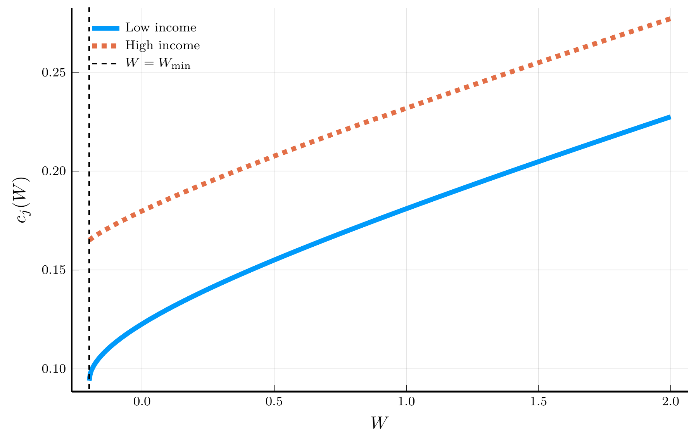
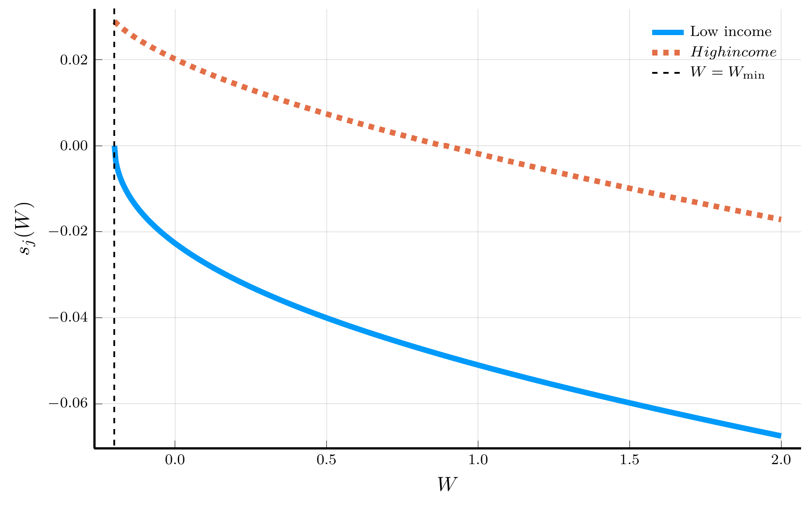
We have used finite differences to generate a local approximation of derivatives, based on function values at neighboring points.
A natural approximation is the forward difference: \[ v'(x_i) = \frac{v_{i+1}-v_i}{\Delta x}+ O(\Delta x). \]
This is equivalent to replacing \(v(x)\) locally by a linear interpolant:
\[ \tilde v(x) = v_i + Dv_i (x-x_i), \qquad Dv_i = \frac{v_{i+1}-v_i}{\Delta x}. \]
Differentiating the interpolant yields \(\tilde v'(x_i)=Dv_i\), i.e., the forward difference.
The central difference formula yields \[ v'(x_i) = \frac{v_{i+1}-v_{i-1}}{2\Delta x} + O(\Delta x^2), \]
This is equivalent to replacing \(v(x)\) by a quadratic interpolant:
\[ \tilde v(x) = \ell_{i-1}(x)v_{i-1} + \ell_i(x)v_i + \ell_{i+1}(x)v_{i+1}, \]
where the basis polynomials are \(\ell_{i-1}(x) = \frac{(x-x_i)(x-x_{i+1})}{2\Delta x^2}\), \(\ell_i(x) = -\frac{(x-x_i+\Delta x)(x-x_i-\Delta x)}{\Delta x^2}\), and \(\ell_{i+1}(x) = \frac{(x-x_i+\Delta x)(x-x_i)}{2\Delta x^2}\).
Differentiating and evaluating at \(x_i\) yields the central difference formulas: \[ \tilde v'(x_i) = \frac{v_{i+1}-v_{i-1}}{2\Delta x}, \qquad \tilde v''(x_i) = \frac{v_{i+1}-2v_i+v_{i-1}}{\Delta x^2}, \]
We can obtain higher-order finite-difference formulas by fitting higher-degree local polynomials and differentiating them.
Polynomials.jl package."""
finite_difference(f, x0, accuracy; scheme=:forward, Δx=0.01)
Approximate f'(x0) by differentiating a local interpolating
polynomial built on a stencil that achieves the requested accuracy.
"""
function finite_difference(f::Function, x0::Float64, accuracy::Int;
scheme::Symbol = :forward, Δx::Float64 = 0.01)
@assert accuracy > 0 "accuracy order must be positive"
steps = zeros(Int, accuracy+1)
if iseven(accuracy)
m = accuracy ÷ 2
steps = collect(-m:m)
else
q = accuracy
steps = scheme === :forward ? collect(0:q) : collect(-q:0)
end
x_points = x0 .+ Δx .* steps
p = Polynomials.fit(x_points, f.(x_points), length(x_points) - 1)
return Polynomials.derivative(p)(x0)
endOne would expect that the error of the finite-difference approximation decreases as the grid is refined (\(\Delta x \to 0\)).
Suppose we approximate a smooth function \(v(x)\) on \([-1,1]\) by a single polynomial of degree \(N\): \[\begin{equation} v(x) \approx \tilde v_N(x) = \sum_{k=0}^{N} a_k x^k, \end{equation}\] where the coefficients \(a_k\) are chosen so that \(\tilde v_N(x_i) = v(x_i)\) at a set of interpolation nodes \(\{x_i\}_{i=0}^N\).
Change of domain
When approximating a function \(v(x)\) on a bounded domain \([a,b]\), we can always map it to the interval \([-1,1]\) via \[ v(x) \equiv V\!\left(\tfrac{(b-a)x + (a+b)}{2}\right), \qquad x \in [-1,1]. \] For a discussion of approximations on unbounded domains, see Chapter 17 of Boyd (2001).
Finite vs. spectral accuracy
Higher-order finite differences improve accuracy algebraically, with error \(O(\Delta x^p)\) for a \(p\)-th order scheme.
This global approach uses information from the entire domain to approximate derivatives or other operators.
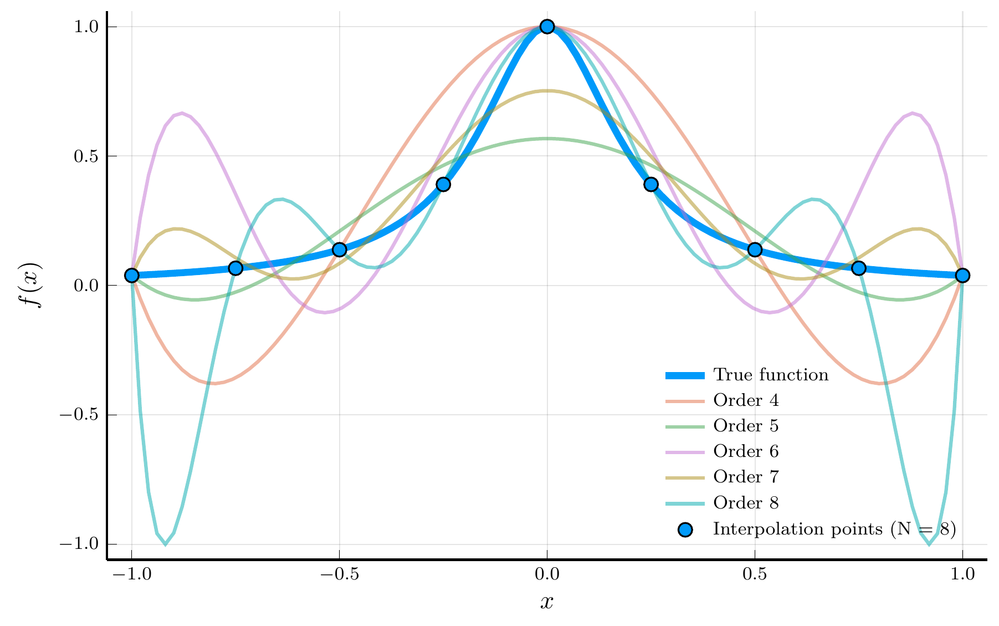
The interpolation error theorem 🌐 provides a useful decomposition of the interpolation error.
The error therefore depends on two components:
We cannot control the smoothness of \(v\), but we can control the second term.
Worst-case interpolation error
The worst-case (uniform) interpolation error is bounded by \[ |v(x) - \tilde v_N(x)| \le \frac{1}{(N+1)!}\, \max_{x \in [-1,1]} |v^{(N+1)}(x)|\, \|\mathcal{P}_{N+1} \|_\infty, \qquad \|\mathcal{P}_{N+1} \|_\infty \equiv \max_{x \in [-1,1]} |\mathcal{P}_{N+1}(x)|. \]
Our goal is clear: choose interpolation nodes \(\{x_i\}\) that minimize \(\|\mathcal{P}_{N+1}\|_\infty\).
Chebyshev minimal amplitude theorem
Define the Chebyshev nodes🌐 as \[ \hat{x}_i = \cos\!\left(\frac{(2i+1)\pi}{2(N+1)}\right), \qquad i = 0,\ldots,N. \] The polynomial \(\mathcal{P}_{N+1}(x) = \prod_{i=0}^{N} (x - x_i)\) attains its smallest maximum amplitude on \([-1,1]\) when the \(x_i\) are the Chebyshev nodes: \[ \|\mathcal{P}_{N+1}\|_\infty = \max_{x \in [-1,1]} |\mathcal{P}_{N+1}(x)| \geq \max_{x \in [-1,1]} \left|\prod_{i=0}^{N} (x - \hat{x}_i)\right|. \]
Chebyshev nodes are the roots of the Chebyshev polynomial 🌐, \[ T_{N+1}(x) = \cos\!\big((N+1)\arccos x\big), \] which oscillates between \(-1\) and \(1\) exactly \(N{+}2\) times on \([-1,1]\).
Chebyshev polynomials enjoy an orthogonality relation: \[ \int_{-1}^1 T_m(x)\,T_n(x)\,w(x)\,dx = 0, \qquad m \ne n, \qquad w(x)=1/\sqrt{1-x^2}. \]
Let \(\tilde v_N(x) = \sum_{k=0}^N a_k T_k(x)\) be the degree-\(N\) Chebyshev interpolant of \(v(x)\):
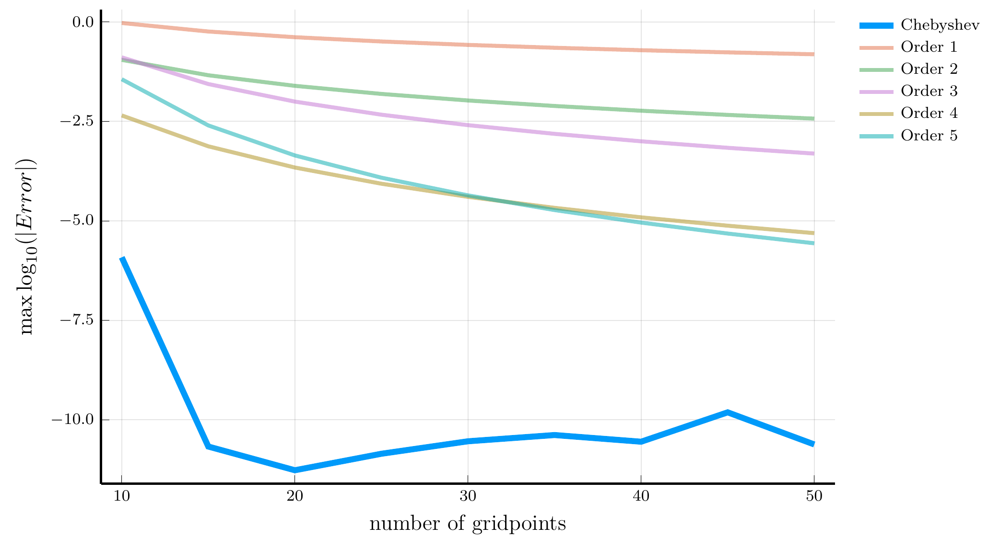
Consider the smooth function \(v(x) = e^{x^2} + 2\sin(x)\):
Chebyshev differentiation reaches machine precision accuracy
Derivatives of Chebyshev polynomials
Because the Chebyshev interpolation error decays exponentially for smooth functions, the same holds for the derivative approximation: \[ \|\tilde v_N'(x) - v'(x)\|_\infty = O(e^{-\alpha N}), \qquad \text{for some } \alpha >0. \]
We can use Chebyshev polynomials to solve PDEs like the HJB equation
Aggregate consumption equals the sum of dividends from the two trees: \(C_t = D_{1,t} + D_{2,t}\).
The HJB equation
The price-consumption ratio \(v_t\) satisfies the HJB equation: \[ \rho v = s - v_s \,2\sigma^2 s(1-s)\!\left(s-\tfrac12\right) + \frac{1}{2} v_{ss}\,\big(2\sigma^2 s^2(1-s)^2\big), \] with boundary conditions \(v(0) = 0\) and \(v(1) = 1/\rho\), using \(d s_t = - 2 \sigma^2 s_t(1-s_t)(s_t -1/2) dt + \sigma s_t(1-s_t)(dB_{1,t}- dB_{2,t})\).
To solve the HJB equation with Chebyshev collocation, we start with a series expansion of \(v(s)\): \[ v(s) = \sum_{n=0}^{\infty} a_n \tilde{T}_n(s) \approx \sum_{n=0}^{N} a_n \tilde{T}_n(s), \qquad \qquad \tilde{T}_n(s) = T_n(2s-1). \]
Change of domain
The mapping \(s \mapsto x=2s-1\) rescales the domain from \([0,1]\) to \([-1,1]\), allowing the use of standard Chebyshev polynomials. Derivatives with respect to \(s\) follow from the chain rule, yielding \(\tilde T_n'(s)=2T_n'(2s-1)\) and \(\tilde T_n''(s)=4T_n''(2s-1)\).
Plugging the expansion into the HJB equation and evaluating at the grid points, we obtain the linear system: \[ \mathbf{L} \mathbf{a} = \mathbf{b}, \] where \(\mathbf{L}\) is a \((N+1) \times (N+1)\) matrix and \(\mathbf{b}\) is a \((N+1)\) vector.
Interior points. For \(i =2,\ldots,N\) and \(j = 1,\ldots,N+1\), we have: \[ \mathbf{L}_{i,j} \;=\; \rho\,\tilde T_{j-1}(s_i) \;+\; 2\sigma^2 s_i(1-s_i)\!\left(s_i-\tfrac12\right)\,\tilde T_{j-1}'(s_i) \;-\; \sigma^2 s_i^2(1-s_i)^2\,\tilde T_{j-1}''(s_i), \qquad \qquad b_i = s_i. \]
Boundary conditions
The first and last rows accommodate the boundary conditions: \[ \begin{align} \mathbf{L}_{1,j} &= \tilde{T}_{j-1}(0), \qquad \mathbf{L}_{N+1,j} = \tilde{T}_{j-1}(1), \qquad \qquad b_1 = 0, \qquad b_{N+1} = 1/\rho. \end{align} \]
We start by defining the model structure for the two-trees model:
To construct the matrix \(\mathbf{L}\), we need to evaluate the Chebyshev polynomials and their derivatives at the grid points:
Polynomials.jl package.function chebyshev_derivatives(n::Int, z::Real;
zmin::Real = -1.0, zmax::Real = 1.0)
a, b = 2 / (zmax - zmin), -(zmin + zmax) / (zmax - zmin)
x = a * z + b # Map to [-1,1]
p = ChebyshevT([zeros(n);1.0]) # Degree n Chebyshev polynomial
d1p = derivative(p) # First derivative
d2p = derivative(d1p) # Second derivative
return p(x), d1p(x) * a, d2p(x) * a^2
endThe function chebyshev_solver solves for the coefficients \(a_n\) of the Chebyshev expansion of the price-consumption ratio \(v(s)\):
NamedTuple with the function \(v(s)\) and the grid \(s_i\).function chebyshev_solver(m::TwoTrees)
(; ρ, σ, N) = m
# Chebyshev grid and mapping to [0,1]
x = reverse(cos.(pi .* (0:N) ./ N))
s = (x .+ 1) ./ 2
# Assemble the linear operator
L, b = zeros(N+1, N+1), copy(s)
for i in 1:N+1, j in 1:N+1
T̃, dT, d2T = chebyshev_derivatives(j-1, s[i]; zmin = 0)
if i == 1 || i == N+1
L[i,j] = T̃ # Boundary points
else
μs = -2 * σ^2 * s[i] * (1 - s[i]) * (s[i] - 1/2)
σs = sqrt(2) * σ * s[i] * (1 - s[i])
L[i,j] = ρ * T̃ - dT * μs - d2T * σs^2 / 2
end
end
b[end] = 1/ρ # Boundary condition at s = 1
a = L \ b # Solve for the coefficients
return (; v = z -> ChebyshevT(a)(2 * z - 1), s = s)
endWe have seen how to use finite-difference and Chebyshev collocation methods to continuous time models.
Finite-difference schemes in higher dimensions.
A second difficulty is maintaining the monotonicity of the scheme.
\[ \rho v = u(\mathbf{s}) + v_{s_1}\,\mu_{s_1}(\mathbf{s}) + v_{s_2}\,\mu_{s_2}(\mathbf{s}) + \tfrac{1}{2}v_{s_1s_1}\,\sigma_{s_1}^2(\mathbf{s}) + \tfrac{1}{2}v_{s_2s_2}\,\sigma_{s_2}^2(\mathbf{s}) + v_{s_1s_2}\,\sigma_{s_1s_2}(\mathbf{s}). \]
A central-difference approximation for the mixed derivative, \[ v_{s_1s_2} \approx \frac{v_{i+1,j+1} - v_{i-1,j-1} - v_{i+1,j-1} + v_{i-1,j+1}} {4 \Delta s_1 \Delta s_2}, \] produces nonnegative off-diagonal elements in the discretization matrix, violating the M-matrix conditions required for stability.
Chebyshev collocation methods share the same first curse.
Several strategies mitigate this explosion.
The need for new methods
Both finite-difference and collocation methods ultimately confront the same exponential barriers as their discrete-time counterparts.